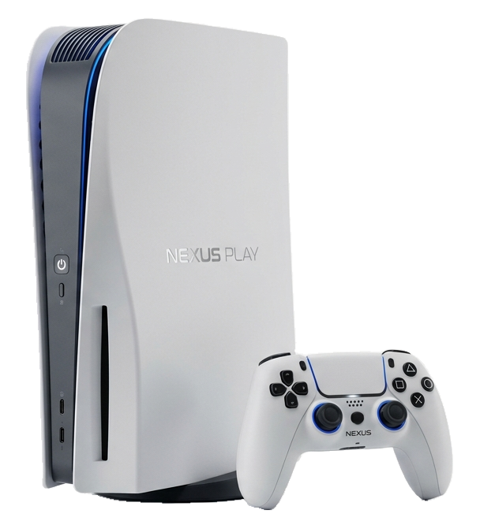

איזו דמות תרצו שתלווה אתכם?


אתם רוצים לצלם עם רחפן את משחק גמר ליגת הכדורגל של קבוצת הנוער העירונית. הגדירו את גובה הרחפן באמצעות הכפתור ובדקו: באיזה יחס נוכל לראות את מספר החולצה של השחקן במרכז המגרש?
יחס

גילינו שביחס של 10 : 1 נוכל לראות את מספר החולצה של השחקן במרכז, ואם נרצה לראות את המגרש כולו - נעבור ליחס של 1,000 : 1.
זהו למעשה קנה מידה – הגדלה של המספר הימני ביחס (לדוגמה, 1,000 : 1), מאפשרת לנו לכווץ מרחקים מהמציאות אל תוך המסך הקטן של הרחפן, ועדיין לייצג אותם במדוייק.
נשתמש בקנה מידה במקומות נוספים, למשל במפות - כשעיר שלמה מופיעה במדוייק על נייר די קטן:

או למשל בתכנית אדריכלית – כששרטוט מדוייק של בית שלם נכנס על מסך מחשב:

הוא מספר 6?

בואו נלמד על קנה מידה
בחרו איך תרצו ללמוד:
מהו קנה מידה?
קנה מידה הוא היחס בין אורך של עצם בשרטוט, במפה, בתרשים, בדגם או באיור לבין אורכו במציאות.
מצד ימין של היחס יצויין האורך במציאות, ומצד שמאל יצויין האורך בתמונה.
לחצו על כל תמונת רחפן, כדי ללמוד על קנה המידה בה:
מהו קנה מידה?
לחצו על הסרטון לצפייה:

מה מייצג המספר 100 בקנה המידה?

שימו לב: נוכל לבנות קנה מידה רק בתנאי שיחידות המידה זהות.
אם הן אינן זהות, עלינו להמיר אותן כך שיהיה זהות.
לדוגמה, כשאורך קו מסויין בתמונה הוא 4 ס"מ, ואורכו במציאות הוא 8 מטרים – נמיר את המטרים לסנטימטרים על מנת לבנות את קנה המידה.
8 מטרים = 800 ס"מ
מכאן שקנה המידה שלנו יהיה 800 : 4
זכרו:
10 מ"מ = 1 ס"מ
100 ס"מ = 1 מטר
1,000 מטרים = 1 ק"מ
עוד מעט נתחיל לתרגל,
רגע לפני, בואו נפתור תרגיל אחד יחד

קנה מידה – בואו נפתור תרגיל ראשון יחד
התבוננו בתרגיל הבא. אל תפתרו אותו, רק הסתכלו על הנתונים וחישבו האם יש לכם כיוון לפתרון.
אורך משטח ההחלקה לסקייטבורד שבתמונה הוא 5 ס"מ.
אורך המשטח במציאות הוא 10 מטרים.

1. מה מהבאים נכון?
שלב אחר שלב
קנה מידה – בואו נפתור תרגיל ראשון יחד
התבוננו בתרגיל הבא. אל תפתרו אותו, רק הסתכלו על הנתונים וחישבו האם יש לכם כיוון לפתרון.
אורך משטח ההחלקה לסקייטבורד שבתמונה הוא 5 ס"מ.
אורך המשטח במציאות הוא 10 מטרים.
1. מה מהבאים נכון?
קודם כל, נבדוק את הנתונים.
האם יחידות המידה של אורך המשטח במציאות ובתמונה זהות?
קנה מידה – בואו נפתור תרגיל ראשון יחד
התבוננו בתרגיל הבא. אל תפתרו אותו, רק הסתכלו על הנתונים וחישבו האם יש לכם כיוון לפתרון.
אורך משטח ההחלקה לסקייטבורד שבתמונה הוא 5 ס"מ.
אורך המשטח במציאות הוא 10 מטרים.
1. מה מהבאים נכון?
נוכל לראות שיחידות המידה אינן זהות.
האם נוכל לבנות יחס בין יחידות מידה שונות?
קנה מידה – בואו נפתור תרגיל ראשון יחד
התבוננו בתרגיל הבא. אל תפתרו אותו, רק הסתכלו על הנתונים וחישבו האם יש לכם כיוון לפתרון.
אורך משטח ההחלקה לסקייטבורד שבתמונה הוא 5 ס"מ.
אורך המשטח במציאות הוא 10 מטרים.
1. מה מהבאים נכון?
לא נוכל לבנות יחס בין יחידות מידה שונות, לכן נמיר את המטרים לסנטימטרים.
כמה סנטימטרים יש ב-10 מטרים?
קנה מידה – בואו נפתור תרגיל ראשון יחד
התבוננו בתרגיל הבא. אל תפתרו אותו, רק הסתכלו על הנתונים וחישבו האם יש לכם כיוון לפתרון.
אורך משטח ההחלקה לסקייטבורד שבתמונה הוא 5 ס"מ.
אורך המשטח במציאות הוא 10 מטרים.
1. מה מהבאים נכון?
ב-10 מטרים יש 1,000 סנטימטרים, וידוע שאורך המשטח בתמונה הוא 5 ס"מ.
מכאן, שקנה המידה הוא 1,000 : 5.
כלומר, תשובה ג היא הנכונה.
קנה מידה – בואו נפתור תרגיל ראשון יחד
התבוננו בתרגיל הבא. אל תפתרו אותו, רק הסתכלו על הנתונים וחישבו האם יש לכם כיוון לפתרון.
אורך משטח ההחלקה לסקייטבורד שבתמונה הוא 5 ס"מ.
אורך המשטח במציאות הוא 10 מטרים.
2. גילינו שקנה המידה הוא 1,000 : 5. השלימו:
קנה מידה – בואו נפתור תרגיל ראשון יחד
התבוננו בתרגיל הבא. אל תפתרו אותו, רק הסתכלו על הנתונים וחישבו האם יש לכם כיוון לפתרון.
אורך משטח ההחלקה לסקייטבורד שבתמונה הוא 5 ס"מ.
אורך המשטח במציאות הוא 10 מטרים.
2. גילינו שקנה המידה הוא 1,000 : 5. השלימו:
גילינו ש-5 ס"מ בתמונה מייצגים 1,000 ס"מ במציאות.
מה עלינו לעשות כדי לגלות מה מייצג 1 ס"מ בתמונה?
קנה מידה – בואו נפתור תרגיל ראשון יחד
התבוננו בתרגיל הבא. אל תפתרו אותו, רק הסתכלו על הנתונים וחישבו האם יש לכם כיוון לפתרון.
אורך משטח ההחלקה לסקייטבורד שבתמונה הוא 5 ס"מ.
אורך המשטח במציאות הוא 10 מטרים.
2. גילינו שקנה המידה הוא 1,000 : 5. השלימו:
חילקנו גם את 1,000 ב-5, וקיבלנו יחס מצומצם של 200 : 1.
המשמעות היא שכל 1 ס"מ מייצג 200 ס"מ במציאות.
ועכשיו, תרגיל לחימום!

(אורך בשרטוט) : (אורך במציאות)
סיימנו את שלב הלימוד, ועכשיו נעבור לתרגול.
מיד יוצגו 5 תרגילים.
מענה נכון על 4 תרגילים ומעלה – נעבור לתרגול המתקדם.
פחות מזה – נתרגל עוד קצת לחיזוק.
קנה המידה של התמונה הוא 6 : 1.
הזיזו את הסרגל אל הקונסולה ומדדו את אורכה.
מהו האורך של הקונסולה במציאות?


אורך שולחן הכתיבה בתרשים הוא 7 ס"מ.
אורך השולחן במציאות הוא 1.4 מטרים.
א. מהו קנה המידה המצומצם של התרשים?

נרצה לפרוס בחדר שטיח שמידותיו במציאות הן:
אורך 1.8 מטרים, רוחב 2.4 מטרים.
ב. מה יהיו מידות השטיח בתרשים?
כל קטע באורך 8 ס"מ במפה מתאר מסלול באורך 2 ק"מ במציאות.
מהו קנה המידה של המפה?

כמה סנטימטרים יש בקילומטר?
המרחק האווירי מרחק אווירי הוא המסלול הקצר והישיר ביותר בין שתי נקודות על פני כדור הארץ. מכיוון שכדור הארץ הוא כדורי, כשמשרטטים את המסלול הישיר הזה על גבי מפה שטוחה, הוא נראה כמו קשת של מעגל. בין שתי המדינות הוא כ-7,000 ק"מ.
קנה המידה של מפת העולם המוצגת הוא 100,000,000 : 1
(1 ס"מ במפה מייצג 10 ק"מ במציאות).
מה יהיה בקירוב אורכו של קו הטיסה המייצג מרחק זה במפה (בס"מ)?
בדקו כמה סנטימטרים יש בקילומטר אחד.
במפה של רחפן א, אורך המסלול היה y ס"מ.
במפה של רחפן ב, אותו המסלול היה y+5 ס"מ.
האם קנה מידה של שתי המפות זהה?
חישבו על הקשר בין המסלול במציאות לבין המסלול במפה.